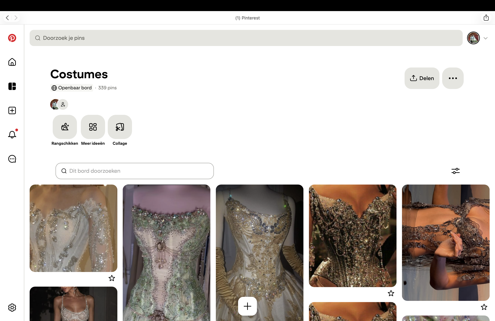

Ik laat mij door allerlei verschillende dingen inspireren. Ik gebruik dagelijks Pinterest om nieuwe ideeën op te doen, maar ook films zijn een grote inspiratiebron voor mij. Vooral sprookjes- en fantasyfilms spreken mij erg aan, omdat daar mijn interesses liggen. Daarom ben ik ook zo dol op Barbie en Disney. Soms zijn mijn jurken bijna een recreatie van een kostuum uit een film, terwijl ik er bij andere projecten juist veel aan verander. Het verschilt dus erg per project hoeveel ik mij door een bestaand kostuum laat inspireren. Ook bezoek ik soms het Nationale Opera & Ballet om de prachtige kostuums in het echt te bewonderen. Zodra ik een idee heb, begin ik met schetsen. Vanuit die eerste schets werk ik het idee steeds verder uit, totdat ik het uiteindelijk werkelijkheid kan maken.
